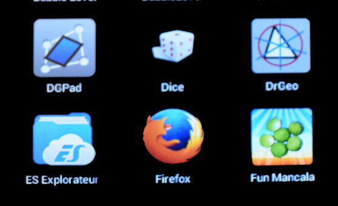

Une fois le fichier installé sur le smartphone (ou la tablette), chercher, parmi les applications installées, celle qui s'appelle "ES explorer" (en bas à gauche ci-dessous):
En touchant cette icône on navigue dans les dossiers du smartphone et dans le dossier "Téléchargement" on devrait trouver un fichier pirates.apk. En le touchant on lance l'installation de l'application (après avoir peut-être reconfiguré le smartphone pour qu'il tolère un apk non signé). Ensuite on peut le lancer.
Revenir à la page d'accueil